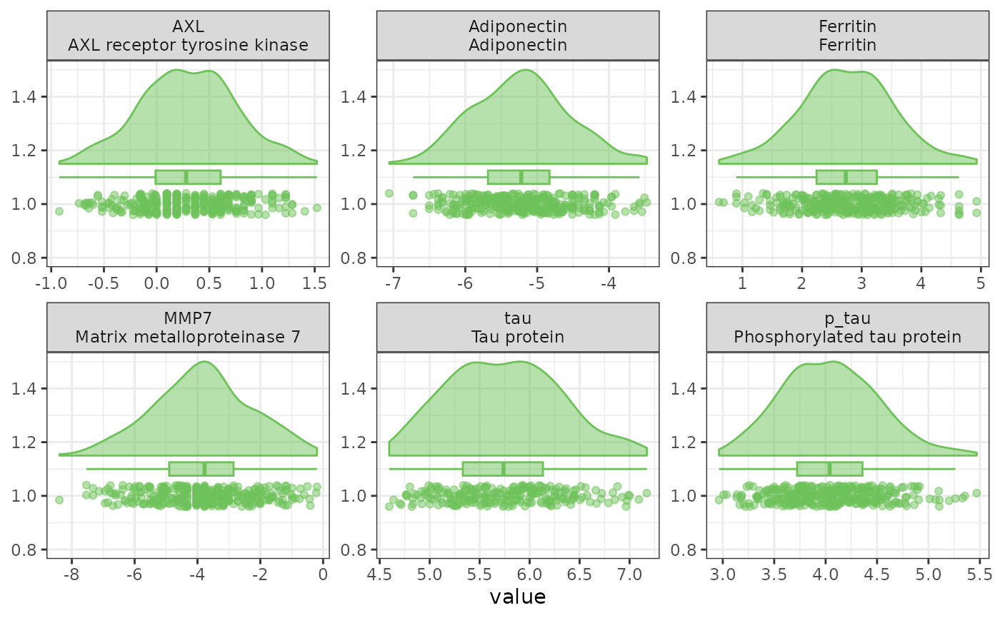
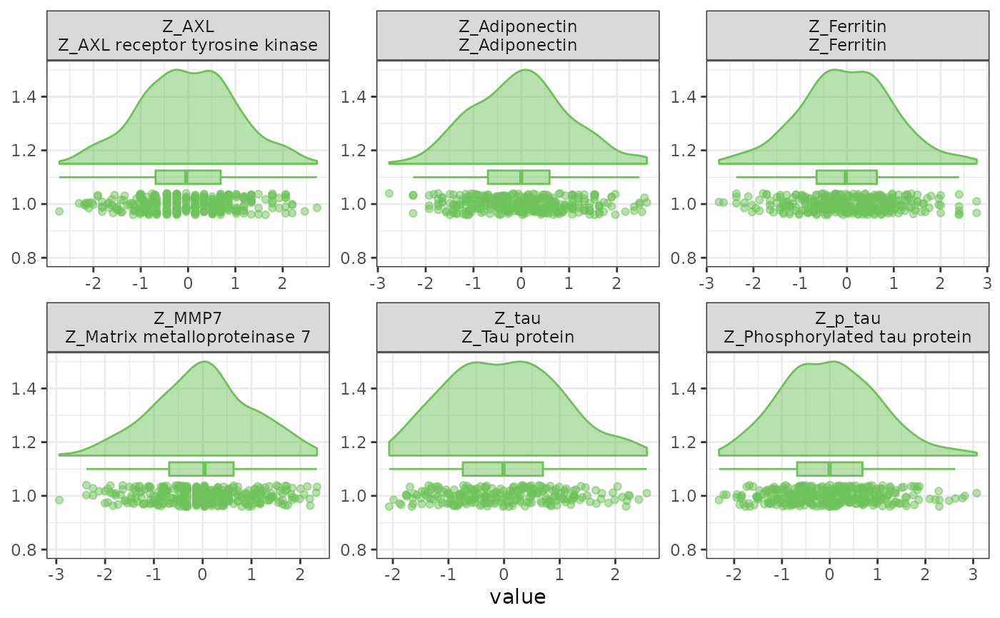

Calculate Z-scores (or standardized scores) and return data + parameters
Source:R/CalcZScore.R
CreateZScoreObject.RdStandardizes each variable to a common scale and, critically, returns the constants used to do it so the identical transformation can be replayed on other data later.
CalcZScore() has been superseded by CreateZScoreObject().
It remains available as a backwards-compatible alias and returns the same
reusable Z-score object.
Usage
CreateZScoreObject(
data,
variables = NULL,
names_prefix = "Z_",
RetainLabels = TRUE,
RenameLabels = TRUE,
center = TRUE,
scale = TRUE,
df = lifecycle::deprecated()
)
CalcZScore(...)Arguments
- data
Data frame with variables to standardize.
- variables
Character vector of variable names. If NULL, uses SciDataReportR::getNumVars(df).
- names_prefix
Prefix to prepend to variable names (default "Z_").
- RetainLabels
Logical; if TRUE and Hmisc is available, copy labels.
- RenameLabels
Logical; if TRUE, apply the same prefix to labels.
- center
Logical; if TRUE, subtract the mean.
- scale
Logical; if TRUE, divide by the SD.
- df
Deprecated (since 19.15.0). Use
datainstead.- ...
Arguments passed to
CreateZScoreObject().
Value
An object of class "ZScoreObj", a list with:
ZScores: data frame of standardized variables only
DataWithZ: original df + standardized variables
Parameters: data frame with Variable, N, Mean, SD
Center: logical flag used
Scale: logical flag used
The equation
For each variable, every value is expressed as its distance from that variable's mean, measured in standard deviations:
$$z_i = \frac{x_i - \bar{x}}{s}$$
where \(\bar{x}\) and \(s\) are the mean and standard deviation of the
variable, both computed with na.rm = TRUE. The result has mean 0 and
standard deviation 1, so z = -2 means the same thing - two standard
deviations below average - no matter which variable it came from.
center = FALSE drops the \(-\bar{x}\) term and scale = FALSE drops the
division by \(s\), which is how the "Center Only" and "Scale Only"
options elsewhere in the package are expressed.
Why the parameters are returned
The \(\bar{x}\) and \(s\) used for each variable are stored in
Parameters, and this is the whole point of returning an object rather
than just a standardized data frame.
A z-score is only interpretable relative to the sample it was computed from. If a validation cohort, a follow-up visit, or a new site is standardized against its own mean and SD, then every group is centered at 0 by construction and any real difference between them is scaled away - the clinical cohort looks exactly like the reference cohort. Worse, the resulting columns are not comparable to the original ones even though they carry the same names.
Passing this object to ProjectZScore() applies the frozen training
constants to the new data instead, so new observations land on the original
scale and group differences survive. The same principle is why the
clustering pipelines store a ZScoreObject alongside the fitted model: a
projected participant must pass through exactly the scaling the model was
trained on.
What the example demonstrates
The first pair of density plots shows why standardizing helps at all: before it, each biomarker sits at its own location, so no single axis is meaningful for all of them and they cannot be compared or pooled; after it, every variable is centered at 0 with a standard deviation of 1, so they share one axis and a value of -2 means the same thing everywhere.
The second part splits the cohort in half and scores the same participants
two ways. Freezing the training mean and SD and applying them through
ProjectZScore() keeps whatever offset the new sample really has.
Re-standardizing the new half against itself forces every variable back to
mean 0, so the new cohort can never differ from the training cohort no
matter what the measured values were. That difference is the information
loss the stored parameters exist to prevent.
See also
ProjectZScore() to apply stored parameters to new data, and
CreateNormativeTScoreModel() when the reference values should also be
adjusted for covariates such as age or education.
Examples
# \donttest{
data(SampleData)
data(SampleVariableTypes)
df_Labelled <- RevalueData(SampleData, SampleVariableTypes)$RevaluedData
vars_Biomarkers <- c("AXL", "Adiponectin", "Ferritin", "MMP7", "tau", "p_tau")
z_obj <- CreateZScoreObject(df_Labelled, variables = vars_Biomarkers)
# The stored centering and scaling constants
htmltools::browsable(htmltools::HTML(as.character(
FreezeTableHeader(z_obj$Parameters, full_width = TRUE)
)))
Variable
N
Mean
SD
AXL
AXL
333
0.2983136
0.4488683
Adiponectin
Adiponectin
333
-5.2200032
0.6654865
Ferritin
Ferritin
333
2.7531741
0.7843400
MMP7
MMP7
333
-3.8341178
1.5534334
tau
tau
233
5.7442965
0.5563591
p_tau
p_tau
333
4.0403935
0.4648403
# Before standardizing: each biomarker has its own measurement scale.
PlotContinuousDistributions(
df_Labelled, variables = vars_Biomarkers, ncol = 3
)
#> Warning: Removed 100 rows containing non-finite outside the scale range
#> (`stat_half_ydensity()`).
#> Warning: Removed 100 rows containing non-finite outside the scale range
#> (`stat_boxplot()`).
#> Warning: Removed 100 rows containing missing values or values outside the scale range
#> (`geom_point_sorted()`).

# After standardizing: every variable shares the same SD scale.
PlotContinuousDistributions(
z_obj$ZScores, variables = names(z_obj$ZScores), ncol = 3
)
#> Warning: Removed 100 rows containing non-finite outside the scale range
#> (`stat_half_ydensity()`).
#> Warning: Removed 100 rows containing non-finite outside the scale range
#> (`stat_boxplot()`).
#> Warning: Removed 100 rows containing missing values or values outside the scale range
#> (`geom_point_sorted()`).

# Split the cohort and score the second half two different ways
set.seed(11)
rows_Train <- sample(nrow(df_Labelled), floor(nrow(df_Labelled) / 2))
df_Train <- df_Labelled[rows_Train, ]
df_New <- df_Labelled[-rows_Train, ]
z_Train <- CreateZScoreObject(df_Train, variables = vars_Biomarkers)
# Right: apply the frozen training parameters
z_Projected <- ProjectZScore(
df_New,
variables = vars_Biomarkers,
parameters = z_Train,
ParameterInputType = "ZScoreObj"
)
# Wrong: re-standardize the new data against itself
z_Restandardized <- CreateZScoreObject(df_New, variables = vars_Biomarkers)
df_Compare <- data.frame(
Variable = vars_Biomarkers,
TrainingMean = round(z_Train$Parameters$Mean, 3),
TrainingSD = round(z_Train$Parameters$SD, 3),
Projected = round(vapply(
z_Projected$ZScores, function(x) mean(as.numeric(x), na.rm = TRUE),
numeric(1)
), 3),
Restandardized = round(vapply(
z_Restandardized$ZScores, function(x) mean(as.numeric(x), na.rm = TRUE),
numeric(1)
), 3),
row.names = NULL
)
# Every `Restandardized` mean is 0 by construction
htmltools::browsable(htmltools::HTML(as.character(
FreezeTableHeader(df_Compare, full_width = TRUE)
)))
Variable
TrainingMean
TrainingSD
Projected
Restandardized
AXL
0.289
0.443
0.044
0
Adiponectin
-5.243
0.654
0.072
0
Ferritin
2.767
0.803
-0.035
0
MMP7
-3.827
1.497
-0.009
0
tau
5.730
0.560
0.052
0
p_tau
4.021
0.433
0.090
0
# }